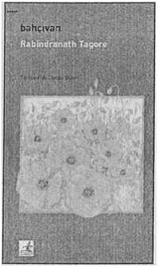

bahçıvan
Rabindranath Tagore
Yaşamın şu katı gerçekleri dediğimiz şeylerle sürekli olarak karşı karşıya kalmamız zihnimizi/ruhumuzu köreltiyor, donuklaştırıyor. Yumuşaklık, sevecenlik kalmıyor, şiirsellik gidiyor.
Ülkemizde büyük bir okuyucu kitlesince bilinen Rabindranath Tagore eşsiz dizelerinde yaşamın katı gerçeklerinin ötesine geçip şöyle bir göz ucuyla da olsa aşkın, dostluğun, insan sevgisinin sonsuzluğuna bakmamızı sağlıyor ve bunun yaşamımızda şiirselliğe yer vereceğine inanıyoruz.